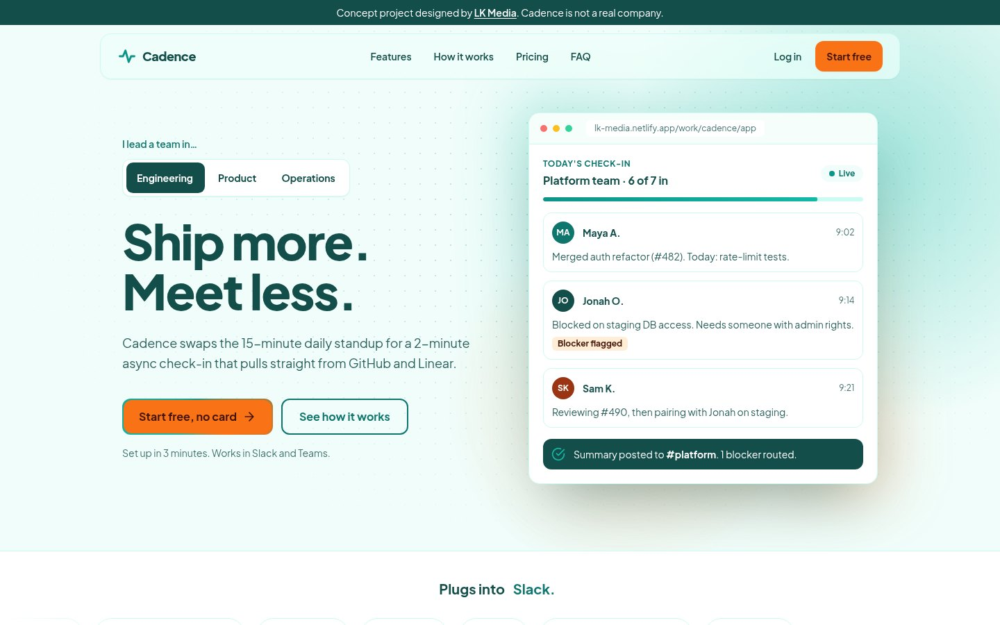

View live site
SaaS · Landing page · Concept
Cadence: async standups for remote teams
A personalised hero that rewrites the headline, features and testimonial for Engineering, Product or Ops visitors, plus a live product mock and 3-tier pricing.
- Personalisation
- Pricing
- Micro-interactions